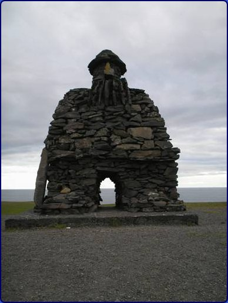

<< retur Om helte i Arnarstapi Bilen svinger
op foran en af de røde hytter i Arnarstapi, hvor vi skal overnatte.
På vejen hertil lod vejrguderne os beskue Snæfellsjökull.
Denne gletscher er en af Islands smukkeste, synes jeg, og i klart vejr
kan den allerede nydes fra flyet ved indflyvningen til Keflavik, desuden
står den som et mindesmærke for store og sære begivenheder
i fortiden. Dens tinder opstod omkring år 300 efter et vulkansk
udbrud, og den hviler således på et krater fra en vulkan,
der var aktiv i hen ved 700 tusinde år, men som forståeligt
nok nu helt har mistet pusten. Der udstråler en aura af mystik
fra Snæfells-jökull, som lokker mange turister til at bestige
den, hvilket skulle kunne lade sig gøre på en fem seks
timer. Både Jules Verne, der i ”Rejsen til jordens indre”
udnævner jøklen til at være indgang til klodens midte,
og Laxness har ladet sig inspirere af den, en inspiration, som skærpedes
af Snæfellsnesshalvøens mange sagahistoriske islæt.
Laxdæla- og Eyrbyggja sagaernes voldsomme, ulykkelige hændelser
er henlagt hertil, og Snorri Sturluson boede her, hvor han blev skammeligt
dræbt på den norske konges bud, da hans magt og betydning
blev en torn i øjet på denne; i dag kan stedet, hvor Snorri
boede, beses i Reykholt, der også byder på en skulptur af
den lærde mand. I udkanten af halvøen residerede Egil Skallagrimsson,
hvis saga måske netop Snorri forfattede. Så jeg udnævner
Snæfellsnes til heltehalvø og får straks belæg
for kroningen, da jeg stiger ud af bilen, for ude ved havkanten står
en kæmpestatue lavet af indsamlede sten fra området, en
så imposant skikkelse kan kun være en helt, men endnu har
han ikke præsenteret sig.  Bardur Udenfor i den karske luft kaster jeg et blik på Bardur, ser jeg en tåre trille, kan det passe, at rigtige helte sommetider græder? Da jeg lidt senere sidder ved hans fødder, får jeg hele historien: Jo, hans forfædre levede i Norge oppe i Dovre blandt dværge og trolde. Selv drog han til Island tilbage i landnamstiden og blev draget af det store snefjeld. Ved Djupalon bygger han gården Laugarbrekka, på nabogården residerede broderen med sine to sønner, Raudfeldur og Solvi. Det var meget praktisk, for så kunne drengene lege med Bardurs døtre, mens han selv passede sin hedenske ceremonier i den store Sönghellir grotte, hvor ekkoet fra dem endnu høres. Knægten i restauranten har da fat i noget, men det, der virkelig skete, var, at Raudheldur en dag, hvor pakisen lå tæt, skubbede min Helga ud på et isbjerg, som drev bort med hende, og selvom hun overlevede turen til Grønland, så jeg hende aldrig mere. Den dag sagde jeg farvel til menneskenes verden, men først efter, Helga var hævnet; Raudfeldur røg ned i en dyb kløft, broderen smed jeg ud fra en klippetop. Det meste foregik i nærheden af, hvor skulptøren Ragnar Kjartansson nu har anbragt mig, men det er kun min skal, du ser, selv lever jeg dybt inde i gletscheren, jeg er dens ånd, mine energier sætter havet i oprør, siger menneskene, og det skal nok være rigtigt. For resten har knægten ikke ret i, at der mangler litteratur om mig, faktisk skrev nogen i middelalderen min saga. © copyright Preben Rasmussen << retur
| |